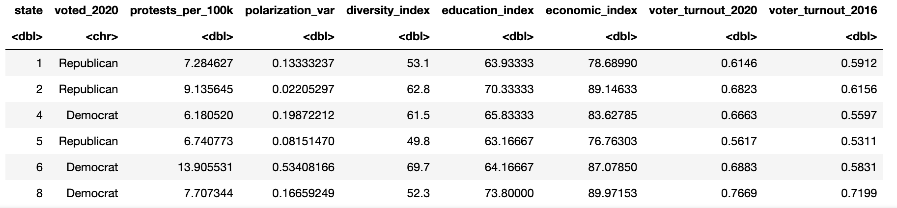
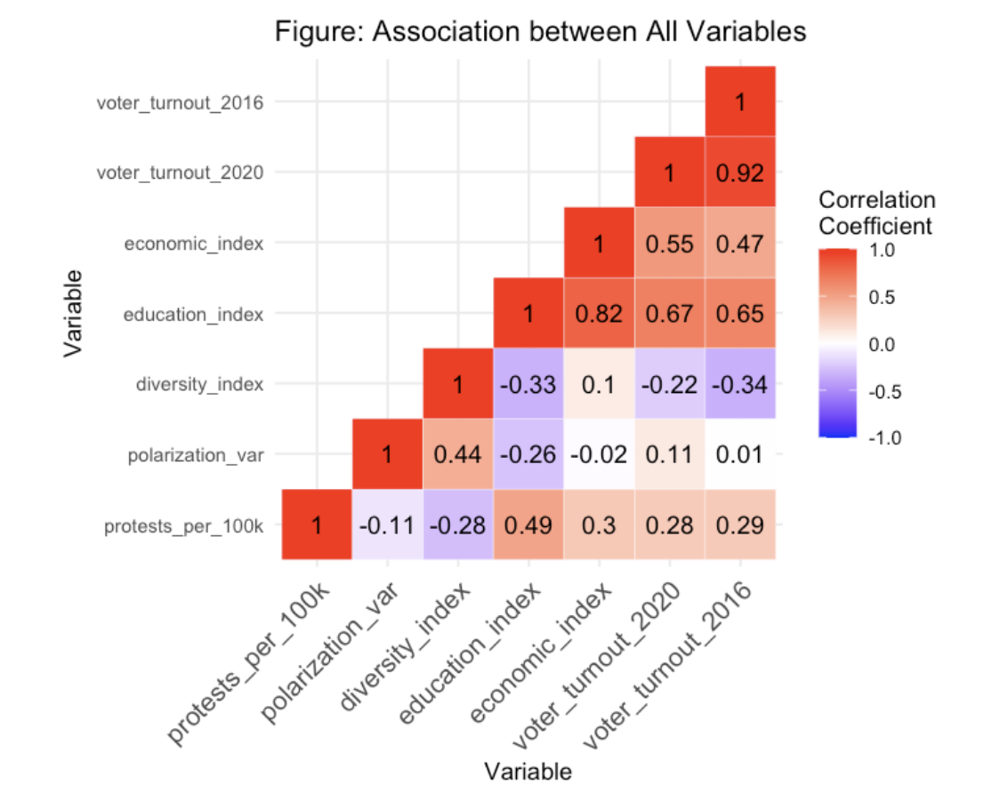
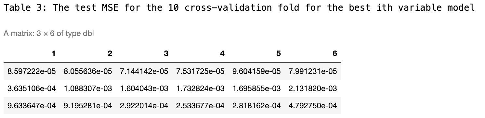
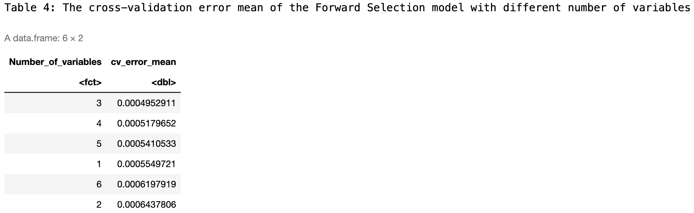
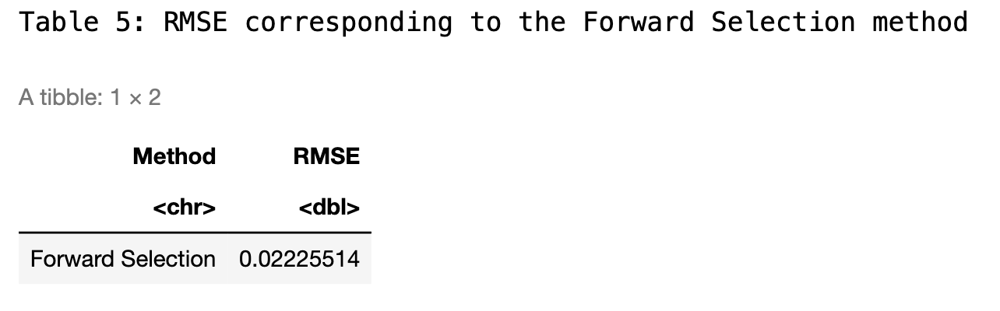
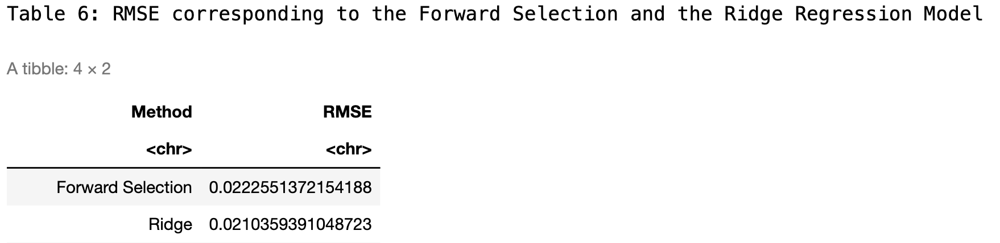
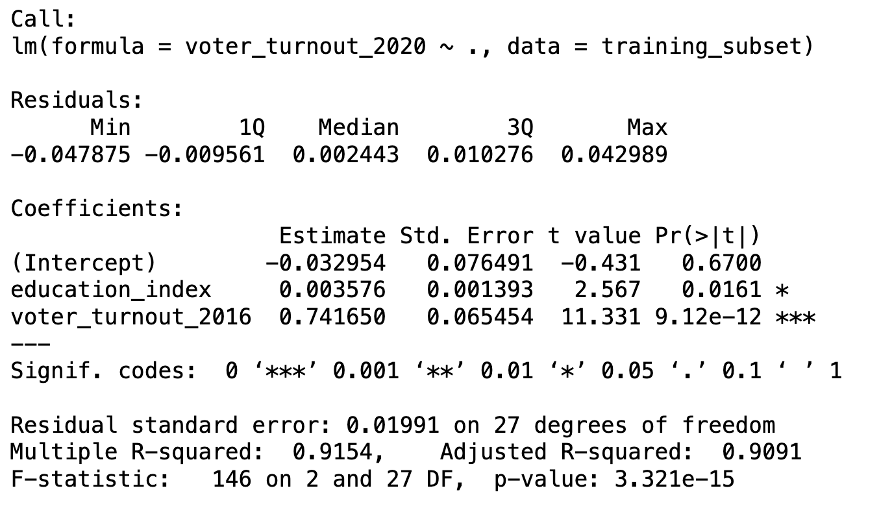
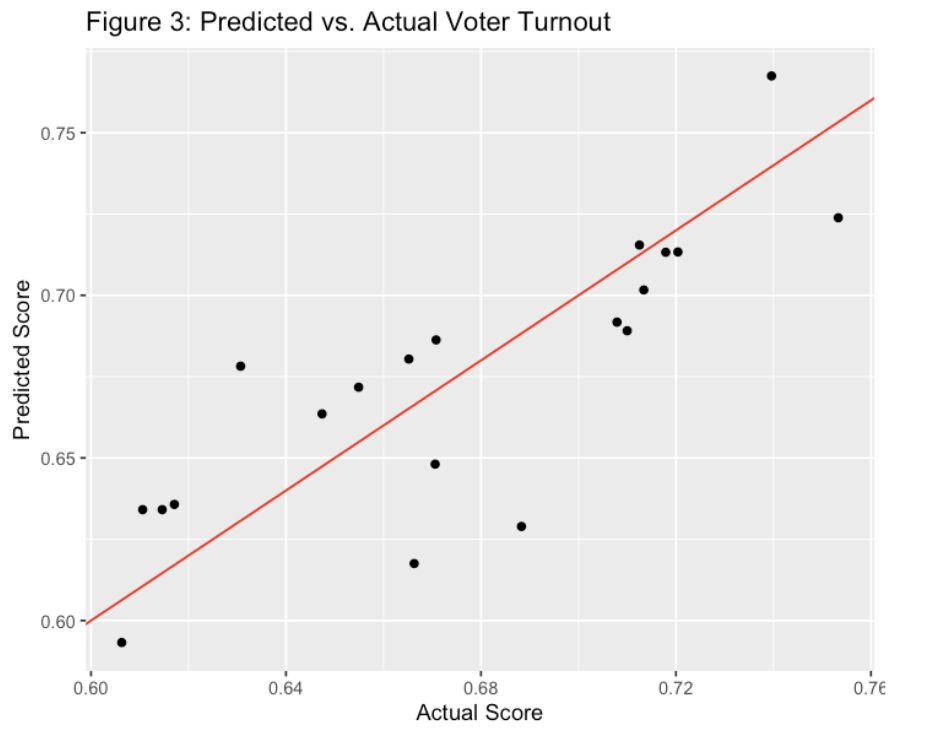

Introduction
With a background in political science and a current focus on computer science, I am very interested in the intersection of these fields. This project aims to integrate statistical modeling techniques within a political framework.
The primary objective of this project was to develop a predictive model capable of estimating voter turnout for the 2020 US presidental election. Recognizing the complexity of voter behavior, this model considers various factors that could potentially influence turnout rates across different states. Based on comprehensive research, the study identified six key variables that might affect these rates. The variables were selected after thorough analysis of several datasets and scholarly sources, all of which are cited below.
I set out to answer the following questions:
Data Set
Here is a detailed look at each variable considered in the model:
With these variables I created a heat map to see the correlation between these predictor variables and the response variables (Voter Turnout 2020).
Figure 1:
Figure 2:
Figure 2 visualizes the association between the response variable and its six numerical explanatory variables. The response variable voter_turnout_2020 has a relatively strong association with voter_turnout_2016, economic_index, and education_index.
Methods and Results
Overview
To predict 2020 voter turnout rates, I utilize the forward selection algorithm and ridge regression method on the training set, selecting the most optimal model. Subsequently, I assess the model's performance on the testing data based on the chosen model.
Why is forward selection algorithm chosen? The Forward Selection technique can simplify models and prevent overfitting by aiding in model simplification. It starts with no predictors and adds them one by one, choosing at each step the variable that has the most significant statistical contribution to the model.
Why is Ridge method chosen? From the EDA section, I suspect the presence of multicollinearity. While traditional linear regression can yield unstable and imprecise coefficient estimates, the introduction of a penalty term can shrink the coefficients, stabilizing the model and mitigating the issue of multicollinearity.
Testing and Training
Initially, I acquired a training and a testing set by reserving 40% of the original dataset for testing purposes, this data set is relatively small so the split is conservative. I further refrain from inspecting the testing set until after the model selection process is completed.
Foward Selection
To estimate the predictive performance of the selected model, I utilized cross-validation with both forward selection and ridge regression. Beginning forward selection:
Figure 3:
I calculate the average across the columns of this matrix to produce a vector. In this vector, the i-th element represents the cross-validation error for the i-th variable model.
Figure 4:
The 3-variable model has the lowest mean of the cross-validation error. Corresponding with the RMSE in figure 5.
Figure 5:
Ridge Regression
I trained the ridge regression model using the same training set that was used for forward selection. Notably, the model demonstrates optimal performance when the lambda value is set at 0.06738, corresponding to the lowest mean squared error (MSE). For a comprehensive comparison, I have included the root mean squared error (RMSE) from the cross-validation of the ridge model in the summary table alongside the results from the forward selection method.
Employing RMSE as the metric for model performance assessment, the ridge regression method exhibits marginally better predictive accuracy compared to other models tested. Given its effectiveness, I will use ridge regression to estimate the influences of different predictors and understand their contribution to the model, although it will not explicitly select variables.
Creating the Model
To construct the most robust model for predicting voter turnout in 2020, I combined insights from both forward selection and ridge regression techniques. Initially, forward selection identified the most statistically significant predictors. Subsequently, ridge regression was employed to refine these selections by adjusting for multicollinearity, which is crucial given the interdependencies often present in economic and demographic data. The final model was an Ordinary Least Squares (OLS) regression, which incorporated the variables deemed most important through our rigorous selection process. This model not only benefits from the simplicity and interpretability of OLS but also from the enhanced predictor selection process that effectively balances the inclusion of important variables while managing multicollinearity. This approach ensures that our model is both stable and has strong predictive power, as evidenced by the high R-squared value and low residual standard error observed in the testing set.
Figure 6:
Figure 7:
The voter turnout model for 2020 displays a high R-squared value of 0.9154, indicating good predictive power with over 91.54% of the variance in voter turnout being explained by the model. This strong fit underscores the significant impact of the variables included, especially the voter turnout from 2016. The residual standard error was low at 0.01991 across 27 degrees of freedom, suggesting that the predicted values were very close to the actual values.
Figure 8:
Discussion
The primary objective of this study is to identify the key factors that significantly influence voter turnout in the 2020 U.S. presidential election. A total of six factors were investigated, and through the computation of RMSE values, three were found to be significant contributors to enhancing the model's fit.
The analysis addresses the initial questions posed: first, whether a substantial relationship exists between historical voter turnout data and the 2020 election turnout, and second, whether various socio-economic and political factors prove significant in predicting voter turnout. Examining the red_OLS model summary reveals the significance of the voter_turnout_2016 variable in predicting the voter_turnout_2020, indicated by the three asterisks (***), which signifies its pronounced influence compared to other variables.
Yielding a relatively high adjusted R-Squared value of 0.9154, our final model demonstrates that independent variables maintain statistical significance. With p-values below the significance level of 0.05, meaningful conclusions can confidently be drawn from the study.
The study's findings offer practical implications for political campaigns and policymakers seeking to enhance voter engagement and turnout. Recommendations include focusing on the education and economic well-being of the electorate, as well as understanding the significant impact of historical voting patterns. Prospective campaigners and political analysts can leverage this research to tailor their strategies based on the identified influential factors and thereby more effectively target interventions aimed at increasing voter participation.
The code for the model can be found on my github along with the seed and data set for replicability: Voter-Turnout-Model.git
Code for creating and cleaning the data set can be found here: Poli_Project.git
References:
- Bureau of Labor Statistics, U.S. Department of Labor. (2024). Local Area Unemployment Statistics.https://www.bls.gov/web/laus/laumstrk.htm
- CNN. (2020). Election 2020: Presidential election results. https://www.cnn.com/election/2020/results/president
- Federal Reserve Bank of St. Louis. (2022). Educational Attainment, Annual: Bachelor's Degree or Higher by State. https://fred.stlouisfed.org/release/tables?eid=391444&rid=330
- Federal Reserve Bank of St. Louis. (2022). Real Median Household Income by State, Annual. https://fred.stlouisfed.org/release/tables?eid=259515&rid=249
- McDonald, M. (2022). 2022 General Election Turnout. United States Elections Project. https://election.lab.ufl.edu/voter-turnout/2022-general-election-turnout/
- United States Department of Agriculture, Economic Research Service. (2023). Percent of total population in Poverty. https://data.ers.usda.gov/reports.aspx?ID=17826
- U.S. Census Bureau. (2020). Racial and Ethnic Diversity in the United States: 2010 and 2020 Census. https://www.census.gov/library/visualizations/interactive/racial-and-ethnic-diversity-in-the -united-states-2010-and-2020-census.html
- World Population Review. (2024). High School Graduation Rates by State 2024. https://worldpopulationreview.com/state-rankings/us-literacy-rates-by-state
- World Population Review. (2024). U.S. Literacy Rates by State. https://worldpopulationreview.com/state-rankings/high-school-graduation-rates-by-state
This past semester I was in a political science course about managing quantative data in political science. This personal project was inspired by work I had done in that class. The relationship explored for my project between polarization and protests, it employs more basic measures of linear regression and data analysis. A more detailed look into the variables I choose and the way they were cleaned and created are listed in these reports. I have linked the reports below.